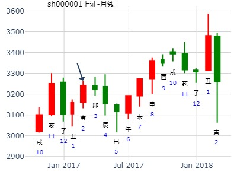
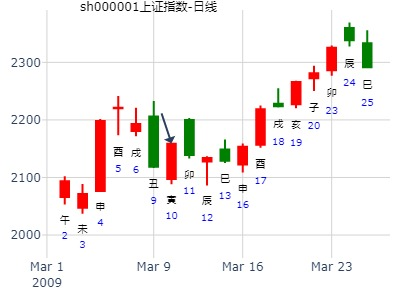
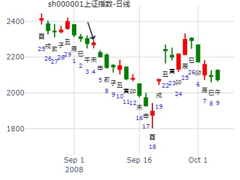
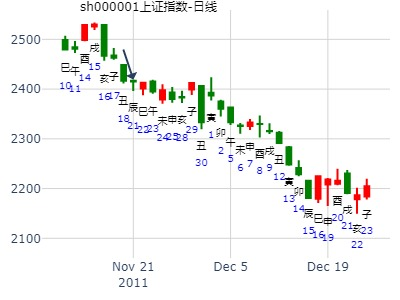

主帖标题: 20121月4日上沪指数走势
占事: 4日上沪指数走势
起卦方式：手工指定
公历时间：2012年1月4日0时31分 农历时间：辛卯年 十二月十一日子时
干支：辛卯年 庚子月 甲子日 甲子时
乾宫：乾为天（六冲）
六神 【本 卦】
玄武 ▄▄▄▄▄ 父母壬戌土 世
白虎 ▄▄▄▄▄ 兄弟壬申金
螣蛇 ▄▄▄▄▄ 官鬼壬午火
勾陈 ▄▄▄▄▄ 父母甲辰土 应
朱雀 ▄▄▄▄▄ 妻财甲寅木
青龙 ▄▄▄▄▄ 子孙甲子水
走势简述：高开－回探－再上扬－午后横盘震荡之后尾盘上冲，报收中阳线
整日指数几乎都在红盘线之上行走
出生：1982 年 性别：男 占事：此时入市比特币投资如何？
排卦：元亨利贞网六爻在线排盘系统 http://www.china95.net
公历起卦时间：2014年1月3日15时45分 (在线摇卦)
干支：癸巳年 甲子月 甲戌日 壬申时 （日空：申酉）
乾宫：乾为天 (六冲) 乾宫：乾为天 (六冲)
六神 伏神 本 卦 变 卦
玄武 父母壬戌土 ▅▅▅▅▅ 世 父母壬戌土 ▅▅▅▅▅ 世
白虎 兄弟壬申金 ▅▅▅▅▅ 兄弟壬申金 ▅▅▅▅▅
腾蛇 官鬼壬午火 ▅▅▅▅▅ 官鬼壬午火 ▅▅▅▅▅
勾陈 父母甲辰土 ▅▅▅▅▅ 应 父母甲辰土 ▅▅▅▅▅ 应
朱雀 妻财甲寅木 ▅▅▅▅▅ 妻财甲寅木 ▅▅▅▅▅
青龙 子孙甲子水 ▅▅▅▅▅ 子孙甲子水 ▅▅▅▅▅
主帖标题: 002634棒杰股份股明天涨跌--手摇卦
公历时间：2020年1月8日19时32分
干 支：己亥年 丁丑月 庚戌日 丙戌时
旬 空：辰巳 申酉 寅卯 午未
神 煞：驿马─申 桃花─卯 日禄─申 贵人─丑，未
中国预测网纳甲六爻排盘
乾宫：乾为天（六冲）
六神 【本 卦】
螣蛇 ▄▄▄▄▄ 父母壬戌土 世
勾陈 ▄▄▄▄▄ 兄弟壬申金
朱雀 ▄▄▄▄▄ 官鬼壬午火
青龙 ▄▄▄▄▄ 父母甲辰土 应
玄武 ▄▄▄▄▄ 妻财甲寅木
白虎 ▄▄▄▄▄ 子孙甲子水
002634棒杰股份股今天9日涨跌
今天涨跌---手摇卦
公历时间：2020年1月9日8时8分 农历时间：己亥年 十二月十五日辰时
干 支：己亥年 丁丑月 辛亥日 壬辰时
旬 空：辰巳 申酉 寅卯 午未
神 煞：驿马─巳 桃花─子 日禄─酉 贵人─寅，午
中国预测网纳甲六爻排盘
艮宫：山火贲 坤宫：地天泰（六合）
六神 伏 神 【本 卦】 【变 卦】
螣蛇 ▄▄▄▄▄ 官鬼丙寅木 ○ ▄▄ ▄▄ 子孙癸酉金 应
勾陈 ▄▄ ▄▄ 妻财丙子水 ▄▄ ▄▄ 妻财癸亥水
朱雀 ▄▄ ▄▄ 兄弟丙戌土 应 ▄▄ ▄▄ 兄弟癸丑土
青龙 子孙丙申金 ▄▄▄▄▄ 妻财己亥水 ▄▄▄▄▄ 兄弟甲辰土 世
玄武 父母丙午火 ▄▄ ▄▄ 兄弟己丑土 × ▄▄▄▄▄ 官鬼甲寅木
白虎 ▄▄▄▄▄ 官鬼己卯木 世 ▄▄▄▄▄ 妻财甲子水
马后炮：寅卯空，六爻作废，二爻只论丑土发动。
反馈，昨收6.5，今天收6.05，跌近7点。是大跌卦。
纳甲六爻在线排盘婚否： 出生年:1971 性别：女
占事：2017丁酉趋势
起卦方式：手动摇卦
公历时间：2017年2月4日9时30分
干 支：丁酉年 壬寅月 壬戌日 乙巳时
旬 空：辰巳 辰巳 子丑 寅卯
乾宫：乾为天（六冲）
六神 【本 卦】
白虎 ▄▄▄▄▄ 父母壬戌土 世
螣蛇 ▄▄▄▄▄ 兄弟壬申金
勾陈 ▄▄▄▄▄ 官鬼壬午火
朱雀 ▄▄▄▄▄ 父母甲辰土 应
青龙 ▄▄▄▄▄ 妻财甲寅木
玄武 ▄▄▄▄▄ 子孙甲子水
此卦为汉高祖走芒锡山卜得之卦，余人难压也。
子孙旬空，午月冲实反而涨。

主帖标题: ★★★★★投资记录！2020年吉祥如意！
求测内容：所持个股今日行情走势如何？
起卦方式：手工指定（铜钱摇卦）
公历：2020年02月14日08时44分
四柱：庚子年 戊寅月 丁亥日 甲辰时 (日空：午未)
六冲卦：乾为天
青龙 ▅▅▅ 父母壬戌土 世
玄武 ▅▅▅ 兄弟壬申金
白虎 ▅▅▅ 官鬼壬午火
螣蛇 ▅▅▅ 父母甲辰土 应
勾陈 ▅▅▅ 妻财甲寅木
朱雀 ▅▅▅ 子孙甲子水
亥日，比扶子孙子水。生合财寅木，看涨。
空方：兄弟申金月破无用。在月休囚。不能克财。
断：今天涨！
无股票名，以大盘代替，仅供参考。

主帖标题: 电脑卦试测2020年2月上证哪日是顶？
试测2020年2月上证哪日是顶？
出生：2020 年 性别：男 占事：没填
排卦：元亨利贞网六爻在线排盘系统 http://www.china95.net
公历起卦时间：2020年2月16日10时37分 (电脑自动)
干支：庚子年 戊寅月 己丑日 己巳时 （日空：午未）
神煞：驿马－亥 桃花－午 日禄－午 贵人－子，申
乾宫：乾为天 (六冲) 乾宫：乾为天 (六冲)
六神 伏神 本 卦 变 卦
勾陈 父母壬戌土 ▅▅▅▅▅ 世 父母壬戌土 ▅▅▅▅▅ 世
朱雀 兄弟壬申金 ▅▅▅▅▅ 兄弟壬申金 ▅▅▅▅▅
青龙 官鬼壬午火 ▅▅▅▅▅ 官鬼壬午火 ▅▅▅▅▅
玄武 父母甲辰土 ▅▅▅▅▅ 应 父母甲辰土 ▅▅▅▅▅ 应
白虎 妻财甲寅木 ▅▅▅▅▅ 妻财甲寅木 ▅▅▅▅▅
螣蛇 子孙甲子水 ▅▅▅▅▅ 子孙甲子水 ▅▅▅▅▅

主帖标题: 2月28日至3月4日大盘预测
公历起卦时间：2022年2月26日10时10分 (电脑自动)
干支：壬寅年 壬寅月 庚戌日 辛巳时 （日空：寅卯）
神煞：驿马－申 桃花－卯 日禄－申 贵人－丑，未
乾宫：乾为天 (六冲) 乾宫：乾为天 (六冲)
六神 伏神 本 卦 变 卦
螣蛇 父母壬戌土 ▅▅▅▅▅ 世 父母壬戌土 ▅▅▅▅▅ 世
勾陈 兄弟壬申金 ▅▅▅▅▅ 兄弟壬申金 ▅▅▅▅▅
朱雀 官鬼壬午火 ▅▅▅▅▅ 官鬼壬午火 ▅▅▅▅▅
青龙 父母甲辰土 ▅▅▅▅▅ 应 父母甲辰土 ▅▅▅▅▅ 应
玄武 妻财甲寅木 ▅▅▅▅▅ 妻财甲寅木 ▅▅▅▅▅
白虎 子孙甲子水 ▅▅▅▅▅ 子孙甲子水 ▅▅▅▅▅
问下周大盘走势如何
断 大涨大大涨
主帖标题: [原创请大家讨论600547股票走向
出生年：1975年 性别：男 占事: 600547
起卦方式：手动摇卦 线上排盘系统
公历时间：2008年3月27日15时53分
干支：戊子年 乙卯月 丙寅日 丙申时 旬空：午未 子丑 戌亥 辰巳
神煞：驿马─申 桃花─卯 日禄─巳 贵人─酉，亥
乾宫：乾为天（六冲）六神 【本 卦】
青龙 ▄▄▄▄▄ 父母壬戌土 世
玄武 ▄▄▄▄▄ 兄弟壬申金
白虎 ▄▄▄▄▄ 官鬼壬午火
螣蛇 ▄▄▄▄▄ 父母甲辰土 应
勾陈 ▄▄▄▄▄ 妻财甲寅木
朱雀 ▄▄▄▄▄ 子孙甲子水
下例卯月寅日是涨，此例是跌，跟世爻旬空有关。旬空不担财。
主帖标题: [09己丑岁每日大盘预测实践] 深市大盘指数涨跌！开市日每天更新！
占事: 3月10日甲寅日深市大盘指数涨跌！
起卦方式：手工指定 六爻线上排盘系统
公历时间：2009年3月10日2时6分
干支：己丑年 丁卯月 甲寅日 乙丑时
旬空：午未 戌亥 子丑 戌亥
神煞：驿马─申 桃花─卯 日禄─寅 贵人─丑，未
乾宫：乾为天（六冲）六神 【本 卦】
玄武 ▄▄▄▄▄ 父母壬戌土 世
白虎 ▄▄▄▄▄ 兄弟壬申金
螣蛇 ▄▄▄▄▄ 官鬼壬午火
勾陈 ▄▄▄▄▄ 父母甲辰土 应
朱雀 ▄▄▄▄▄ 妻财甲寅木
青龙 ▄▄▄▄▄ 子孙甲子水
一片阳，物极必反！昨跌今涨！
[此贴子已经被作者于2009-3-10 2:05:44编辑过]

主帖标题: [09己丑岁个股跟踪预测实践]
000998隆平高科与上日收盘对比涨跌！开市每天更新！
占事: 3月31日乙亥日000998隆平高科与上日收盘对比涨跌！
起卦方式：手动摇卦 周易天地线上排盘系统
公历时间：2009年3月30日22时31分
干支：己丑年 丁卯月 甲戌日 乙亥时 旬空：午未 戌亥 申酉 申酉
神煞：驿马─申 桃花─卯 日禄─寅 贵人─丑，未
乾宫：乾为天（六冲）六神 【本 卦】
玄武 ▄▄▄▄▄ 父母壬戌土 世
白虎 ▄▄▄▄▄ 兄弟壬申金
螣蛇 ▄▄▄▄▄ 官鬼壬午火
勾陈 ▄▄▄▄▄ 父母甲辰土 应
朱雀 ▄▄▄▄▄ 妻财甲寅木
青龙 ▄▄▄▄▄ 子孙甲子水
财月建，兄空！
小涨！3.0%

主帖标题: 我收集到的3月9日到13日上证指数周卦
4
3月9日到13日上证指数
公历时间：2020年3月5日21时5分
干 支：庚子年 己卯月 丁未日 辛亥时
旬 空：辰巳 申酉 寅卯 寅卯
神 煞：驿马─巳 桃花─子 日禄─午 贵人─酉，亥
中国预测网纳甲六爻排盘
乾宫：乾为天（六冲）
六神 【本 卦】
青龙 ▄▄▄▄▄ 父母壬戌土 世
玄武 ▄▄▄▄▄ 兄弟壬申金
白虎 ▄▄▄▄▄ 官鬼壬午火
螣蛇 ▄▄▄▄▄ 父母甲辰土 应
勾陈 ▄▄▄▄▄ 妻财甲寅木
朱雀 ▄▄▄▄▄ 子孙甲子水
原断涨
马后炮：用神寅虽月旺，奈何旬空无用。

主帖标题: 同卦异果卦集合
上证周卦
公历时间：2012年4月8日7时32分 农历时间：壬辰年 三月十八日辰时
干 支：壬辰年 甲辰月 己亥日 戊辰时
旬 空：午未 寅卯 辰巳 戌亥
神 煞：驿马─巳 桃花─子 日禄─午 贵人─子，申
中国预测网纳甲六爻排盘
乾宫：乾为天（六冲）
六神 【本 卦】
勾陈 ▄▄▄▄▄ 父母壬戌土 世
朱雀 ▄▄▄▄▄ 兄弟壬申金
青龙 ▄▄▄▄▄ 官鬼壬午火
玄武 ▄▄▄▄▄ 父母甲辰土 应
白虎 ▄▄▄▄▄ 妻财甲寅木
螣蛇 ▄▄▄▄▄ 子孙甲子水
主帖标题: 2017年5月大盘涨跌卦
占事：2017年5月大盘涨跌？
公历起卦时间：2017年4月28日16时11分 (手工指定)
干支：丁酉年 甲辰月 乙酉日 甲申时 （日空：午未）
神煞：驿马－亥 桃花－午 日禄－卯 贵人－子，申
乾宫：乾为天 (六冲) 乾宫：乾为天 (六冲)
六神 伏神 本 卦 变 卦
玄武 父母壬戌土 ▅▅▅▅▅ 世 父母壬戌土 ▅▅▅▅▅ 世
白虎 兄弟壬申金 ▅▅▅▅▅ 兄弟壬申金 ▅▅▅▅▅
腾蛇 官鬼壬午火 ▅▅▅▅▅ 官鬼壬午火 ▅▅▅▅▅
勾陈 父母甲辰土 ▅▅▅▅▅ 应 父母甲辰土 ▅▅▅▅▅ 应
朱雀 妻财甲寅木 ▅▅▅▅▅ 妻财甲寅木 ▅▅▅▅▅
青龙 子孙甲子水 ▅▅▅▅▅ 子孙甲子水 ▅▅▅▅▅
马后炮：用神不得日月。定性跌？
主帖标题: 2022年第15周4月11至4月15日个股300491和600031预测汇总
注：估计此卦为600031，因为同日同贴另一卦指明为300491
公历时间：2022年4月12日19时31分 农历时间：壬寅年 三月十二日戌时
干 支：壬寅年 甲辰月 乙未日 丙戌时
旬 空：辰巳 寅卯 辰巳 午未
神 煞：驿马─巳 桃花─子 日禄─卯 贵人─子，申
中国预测网纳甲六爻排盘
乾宫：乾为天（六冲）
六神 【本 卦】
玄武 ▄▄▄▄▄ 父母壬戌土 世
白虎 ▄▄▄▄▄ 兄弟壬申金
螣蛇 ▄▄▄▄▄ 官鬼壬午火
勾陈 ▄▄▄▄▄ 父母甲辰土 应
朱雀 ▄▄▄▄▄ 妻财甲寅木
青龙 ▄▄▄▄▄ 子孙甲子水
600031与上证指数都是跌。
世爻月破，用神无力入墓，跌。
主帖标题: 下周沪市震荡变化！！！！！
时间：2022年4月12日19时31分
农历时间：壬寅年 三月十二日戌时
干 支：壬寅年 甲辰月 乙未日 丙戌时
旬 空：辰巳 寅卯 辰巳 午未
乾宫：乾为天（六冲）
六神 【本 卦】
玄武 ▄▄▄▄▄ 父母壬戌土 世
白虎 ▄▄▄▄▄ 兄弟壬申金
螣蛇 ▄▄▄▄▄ 官鬼壬午火
勾陈 ▄▄▄▄▄ 父母甲辰土 应
朱雀 ▄▄▄▄▄ 妻财甲寅木
青龙 ▄▄▄▄▄ 子孙甲子水 、
主帖标题: 收购中信国金消息对601998中信银行近期股价的影响：积极
宁波银行[002142]，
起卦方式：手工指定 www.iqing.net 线上排盘系统
公历时间：2009年5月6日12时14分 星期三
干支：己丑年 己巳月 辛亥日 甲午时 (旬空：寅卯)
神煞：驿马—巳 桃花—子 日禄—酉 贵人—寅，午
乾宫：乾为天（六冲）
六神 【本 卦】
螣蛇 ▅▅▅▅▅ 父母壬戌土 世
勾陈 ▅▅▅▅▅ 兄弟壬申金
朱雀 ▅▅▅▅▅ 官鬼壬午火
青龙 ▅▅▅▅▅ 父母甲辰土 应
玄武 ▅▅▅▅▅ 妻财甲寅木
白虎 ▅▅▅▅▅ 子孙甲子水
此主贴还有分贴内容
收购中信国金消息对601998中信银行近期股价的影响：积极
中信银行[601998]未来走势？
起卦方式：手工指定 www.iqing.net 线上排盘系统
公历时间：2009年5月9日9时55分 星期六
干支：己丑年 己巳月 甲寅日 己巳时 (旬空：子丑)
神煞：驿马—申 桃花—卯 日禄—寅 贵人—丑，未
震宫： 地风升
六神 伏 神 【本 卦】
玄武 ▅▅ ▅▅ 官鬼癸酉金
白虎 ▅▅ ▅▅ 父母癸亥水
螣蛇 子孙庚午火 ▅▅ ▅▅ 妻财癸丑土 世
勾陈 ▅▅▅▅▅ 官鬼辛酉金
朱雀 兄弟庚寅木 ▅▅▅▅▅ 父母辛亥水
青龙 ▅▅ ▅▅ 妻财辛丑土 应
主帖标题: 请村夫指点
以下是引用11feiniao11在2009-5-8 21:33:00的发言：
出生年：1982年 性别：女
占事: 财运起卦方式：手动摇卦 周易天地www.64gua.com六爻线上排盘系统 公历时间：2009年5月8日21时30分
干支：己丑年 己巳月 癸丑日 癸亥时 旬空：午未 戌亥 寅卯 子丑
神煞：驿马─亥 桃花─午 日禄─子 贵人─巳，卯
乾宫：乾为天（六冲）六神 【本 卦】
白虎 ▄▄▄▄▄ 父母壬戌土 世
螣蛇 ▄▄▄▄▄ 兄弟壬申金
勾陈 ▄▄▄▄▄ 官鬼壬午火
朱雀 ▄▄▄▄▄ 父母甲辰土 应
青龙 ▄▄▄▄▄ 妻财甲寅木
玄武 ▄▄▄▄▄ 子孙甲子水
村夫指点
占财运！
多为工作上的烦恼所缠绕！今年财运拮据！尤其申酉月之前，亥子月之后会稍微好转！父母是有文化的人，但对你是比较严格的！
虽然你是个比较能干的人，但却是怀才而不遇，没有机会去发展自己！
时间忙！就看这么多了！
主帖标题: 5月3日上证大盘走势
婚否： 出生年:1981 性别：男
占事：5月2日上证大盘走势 起卦方式：手动摇卦
公历时间：2013年5月1日11时5分
干 支：癸巳年 丙辰月 丁卯日 丙午时
旬 空：午未 子丑 戌亥 寅卯
神 煞：驿马─巳 桃花─子 日禄─午 贵人─酉，亥
乾宫：乾为天（六冲）
六神 【本 卦】
青龙 ▄▄▄▄▄ 父母壬戌土 世
玄武 ▄▄▄▄▄ 兄弟壬申金
白虎 ▄▄▄▄▄ 官鬼壬午火
螣蛇 ▄▄▄▄▄ 父母甲辰土 应
勾陈 ▄▄▄▄▄ 妻财甲寅木
朱雀 ▄▄▄▄▄ 子孙甲子水
此卦为汉高祖走芒锡山卜得之卦，余人难压也。
和昨天的卦一样啊。
此贴主-好男儿，此人从5月1日-8日，每天的日卦都出同一个卦，乾，疑似问题卦。所以删除其他日子贴子。K线图仅供参考。
占事：上证指数
时间：2016年5月4日19点42分 星期三
干支：丙申年 壬辰月 丙戌日 戊戌时
辰月 丙戌日（旬空：午未）
六神 乾为天 乾宫
青龙 ■■■■■■父母戌土 世
玄武 ■■■■■■兄弟申金
白虎 ■■■■■■官鬼午火
腾蛇 ■■■■■■父母辰土 应
勾陈 ■■■■■■妻财寅木
朱雀 ■■■■■■子孙子水
六冲卦
主帖标题: 5.17是涨？跌？幅度如何？（4）
600030：
干支：辛丑年 癸巳月 甲子日 辛未时
乾宫：乾为天 (六冲) 乾宫：乾为天 (六冲)
六神 伏神 本 卦 变 卦
玄武 父母壬戌土 ▅▅▅▅▅ 世 父母壬戌土 ▅▅▅▅▅ 世
白虎 兄弟壬申金 ▅▅▅▅▅ 兄弟壬申金 ▅▅▅▅▅
螣蛇 官鬼壬午火 ▅▅▅▅▅ 官鬼壬午火 ▅▅▅▅▅
勾陈 父母甲辰土 ▅▅▅▅▅ 应 父母甲辰土 ▅▅▅▅▅ 应
朱雀 妻财甲寅木 ▅▅▅▅▅ 妻财甲寅木 ▅▅▅▅▅
青龙 子孙甲子水 ▅▅▅▅▅ 子孙甲子水 ▅▅▅▅▅
收阳，中阳
002269 ：
坎宫：泽火革 坎宫：泽火革
六神 伏神 本 卦 变 卦
玄武 官鬼丁未土 ▅▅ ▅▅ 官鬼丁未土 ▅▅ ▅▅
白虎 父母丁酉金 ▅▅▅▅▅ 父母丁酉金 ▅▅▅▅▅
螣蛇 兄弟丁亥水 ▅▅▅▅▅ 世 兄弟丁亥水 ▅▅▅▅▅ 世
勾陈 妻财戊午火 兄弟己亥水 ▅▅▅▅▅ 兄弟己亥水 ▅▅▅▅▅
朱雀 官鬼己丑土 ▅▅ ▅▅ 官鬼己丑土 ▅▅ ▅▅
青龙 子孙己卯木 ▅▅▅▅▅ 应 子孙己卯木 ▅▅▅▅▅ 应
收阳，幅度小，接近平盘
300428:
坎宫：水火既济 坎宫：水火既济
六神 伏神 本 卦 变 卦
玄武 兄弟戊子水 ▅▅ ▅▅ 应 兄弟戊子水 ▅▅ ▅▅ 应
白虎 官鬼戊戌土 ▅▅▅▅▅ 官鬼戊戌土 ▅▅▅▅▅
螣蛇 父母戊申金 ▅▅ ▅▅ 父母戊申金 ▅▅ ▅▅
勾陈 妻财戊午火 兄弟己亥水 ▅▅▅▅▅ 世 兄弟己亥水 ▅▅▅▅▅ 世
朱雀 官鬼己丑土 ▅▅ ▅▅ 官鬼己丑土 ▅▅ ▅▅
青龙 子孙己卯木 ▅▅▅▅▅ 子孙己卯木 ▅▅▅▅▅
收阴，幅度有点大
主帖标题: 明日大盘.
生年：年 性别：男 占事: 明日大盘
起卦方式：手动摇卦 周易天地www.64gua.com六爻线上排盘系统
公历时间：2007年6月13日22时25分
干支：丁亥年 丙午月 戊寅日 癸亥时 旬空：午未 寅卯 申酉 子丑
神煞：驿马─申 桃花─卯 日禄─巳 贵人─丑，未
乾宫：乾为天（六冲）六神 【本 卦】
朱雀 ▄▄▄▄▄ 父母壬戌土 世
青龙 ▄▄▄▄▄ 兄弟壬申金
玄武 ▄▄▄▄▄ 官鬼壬午火
白虎 ▄▄▄▄▄ 父母甲辰土 应
螣蛇 ▄▄▄▄▄ 妻财甲寅木
勾陈 ▄▄▄▄▄ 子孙甲子水
2011年 6月 6日 12时 24分 (起卦方式：手动指定)
占6.6-6.10日上证走势？
干支：辛卯年 甲午月 壬辰日 丙午时 日空亡：午未
神煞：驿马－寅 桃花－酉 日禄－亥 贵人－卯，巳
乾宫：乾为天 (六冲)
六神 伏神 本 卦
白虎 父母戌土 ▅▅▅▅▅ 世
螣蛇 兄弟申金 ▅▅▅▅▅
勾陈 官鬼午火 ▅▅▅▅▅
朱雀 父母辰土 ▅▅▅▅▅ 应
青龙 妻财寅木 ▅▅▅▅▅
玄武 子孙子水 ▅▅▅▅▅
主帖标题: 603002宏昌电子中期走势如何 ？
求测人：某人，女，电脑摇卦(起卦方式)
占问事宜：603002中期走势
公历：2015年6月11日22时25分，星期四。
干支：乙未年 壬午月 戊午日 癸亥时 (卦身：巳)
主变卦 乾为天(乾宫) [空亡:子、丑]
朱雀 ▅▅▅▅▅ 父母壬戌土 世
青龙 ▅▅▅▅▅ 兄弟壬申金
玄武 ▅▅▅▅▅ 官鬼壬午火
白虎 ▅▅▅▅▅ 父母甲辰土 应
螣蛇 ▅▅▅▅▅ 妻财甲寅木
勾陈 ▅▅▅▅▅ 子孙甲子水
出生：没填 年 性别：男 占事：300401花园生物明天涨跌
排卦：元亨利贞网六爻在线排盘系统 http://www.china95.net
公历起卦时间：2016年6月23日16时2分 (电脑自动)
干支：丙申年 甲午月 丙子日 丙申时 （日空：申酉）
神煞：驿马－寅 桃花－酉 日禄－巳 贵人－酉，亥
乾宫：乾为天 (六冲) 乾宫：乾为天 (六冲)
六神 伏神 本 卦 变 卦
青龙 父母壬戌土 ▅▅▅▅▅ 世 父母壬戌土 ▅▅▅▅▅ 世
玄武 兄弟壬申金 ▅▅▅▅▅ 兄弟壬申金 ▅▅▅▅▅
白虎 官鬼壬午火 ▅▅▅▅▅ 官鬼壬午火 ▅▅▅▅▅
腾蛇 父母甲辰土 ▅▅▅▅▅ 应 父母甲辰土 ▅▅▅▅▅ 应
勾陈 妻财甲寅木 ▅▅▅▅▅ 妻财甲寅木 ▅▅▅▅▅
朱雀 子孙甲子水 ▅▅▅▅▅ 子孙甲子水 ▅▅▅▅▅
飞龙股份6.8壬午一至6.12哪日顶？
公历起卦时间：2020年6月9日11时25分 (电脑自动)
干支：庚子年 壬午月 癸未日 戊午时 （日空：申酉）
神煞：驿马－巳 桃花－子 日禄－子 贵人－卯，巳
乾宫：乾为天 (六冲) 乾宫：乾为天 (六冲)
六神 伏神 本 卦 变 卦
白虎 父母壬戌土 ▅▅▅▅▅ 世 父母壬戌土 ▅▅▅▅▅ 世
螣蛇 兄弟壬申金 ▅▅▅▅▅ 兄弟壬申金 ▅▅▅▅▅
勾陈 官鬼壬午火 ▅▅▅▅▅ 官鬼壬午火 ▅▅▅▅▅
朱雀 父母甲辰土 ▅▅▅▅▅ 应 父母甲辰土 ▅▅▅▅▅ 应
青龙 妻财甲寅木 ▅▅▅▅▅ 妻财甲寅木 ▅▅▅▅▅
玄武 子孙甲子水 ▅▅▅▅▅ 子孙甲子水 ▅▅▅▅▅
占事：华兰生物未来三个月
时间: 2021-06-12 7时44分
干支: 辛丑年甲午月辛卯日壬辰时 (旬空: 午未 )
乾静卦
腾蛇 ▅▅▅▅▅ 父母戌土 世
勾陈 ▅▅▅▅▅ 兄弟申金
朱雀 ▅▅▅▅▅ 官鬼午火
青龙 ▅▅▅▅▅ 父母辰土 应
玄武 ▅▅▅▅▅ 妻财寅木
白虎 ▅▅▅▅▅ 子孙子水
子孙月破无力。一路跌。申月财破跌。
占事：上能电气六七月走势
2022-06-12
时间: 2022-06-12 17时39分
干支: 壬寅年丙午月丙申日丁酉时 (旬空: 辰巳 )
乾静卦
青龙 ▅▅▅▅▅ 父母戌土 世
玄武 ▅▅▅▅▅ 兄弟申金
白虎 ▅▅▅▅▅ 官鬼午火
腾蛇 ▅▅▅▅▅ 父母辰土 应
勾陈 ▅▅▅▅▅ 妻财寅木
朱雀 ▅▅▅▅▅ 子孙子水

主帖标题: 未月本人股票操作基本思路
以下是引用钱水源在2007-7-8 10:14:00的发言：
主题：st罗牛[000735]，问财？
丁亥 丁未 癸卯 丁巳 (辰巳空)
丁亥年五月廿四(2007/07/08 10:10:22)
乾为天
白虎 父母戌土 ／ 世
腾蛇 兄弟申金 ／
勾陈 官鬼午火 ／
朱雀 父母辰土 ／ 应
青龙 妻财寅木 ／
玄武 子孙子水 ／ *ST罗牛（000735）
主帖标题: 600723本周每日如何
干支：戊子年 己未月 丙辰日 癸巳时 旬空：午未 子丑 子丑 午未
神煞：驿马─寅 桃花─酉 日禄─巳 贵人─酉，亥
乾宫：乾为天（六冲）六神 【本 卦】
青龙 ▄▄▄▄▄ 父母壬戌土 世
玄武 ▄▄▄▄▄ 兄弟壬申金
白虎 ▄▄▄▄▄ 官鬼壬午火
螣蛇 ▄▄▄▄▄ 父母甲辰土 应
勾陈 ▄▄▄▄▄ 妻财甲寅木
朱雀 ▄▄▄▄▄ 子孙甲子水
周二辰土日,父母相冲,跌.周三巳火日克合兄弟,涨.周四午火日,冲起旬空子孙,涨.周五未土日,跌.
[此贴子已经被作者于2008-7-15 15:17:01编辑过]
占事：601000唐山港明天涨跌
排卦：元亨利贞网六爻在线排盘系统 http://www.china95.net
公历起卦时间：2014年7月3日19时2分 (在线摇卦)
干支：甲午年 庚午月 乙亥日 丙戌时 （日空：申酉）
神煞：驿马－巳 桃花－子 日禄－卯 贵人－子，申
乾宫：乾为天 (六冲) 乾宫：乾为天 (六冲)
六神 伏神 本 卦 变 卦
玄武 父母壬戌土 ▅▅▅▅▅ 世 父母壬戌土 ▅▅▅▅▅ 世
白虎 兄弟壬申金 ▅▅▅▅▅ 兄弟壬申金 ▅▅▅▅▅
腾蛇 官鬼壬午火 ▅▅▅▅▅ 官鬼壬午火 ▅▅▅▅▅
勾陈 父母甲辰土 ▅▅▅▅▅ 应 父母甲辰土 ▅▅▅▅▅ 应
朱雀 妻财甲寅木 ▅▅▅▅▅ 妻财甲寅木 ▅▅▅▅▅
青龙 子孙甲子水 ▅▅▅▅▅ 子孙甲子水 ▅▅▅▅▅

主帖标题: [求助]000726何时解套
以卦看，本星期开始冲高了。看来买此股的人很多呦，我身边不少人被套。以下是他人的问卦，也被套了
占事：预测000726本周怎么样
起卦时间：2007年8月20日13时45分
起卦方式:(手动设卦) 国际易讯网※六爻排盘系统※
丁亥年 戊申月 丙戌日 乙未时 日空亡：午未
乾宫：乾为天(六冲) 乾宫：乾为天(六冲)
六神 伏神 本 卦 变 卦
青龙 父戌▅▅▅▅▅世 父戌▅▅▅▅▅世
玄武 兄申▅▅▅▅▅ 兄申▅▅▅▅▅
白虎 官午▅▅▅▅▅ 官午▅▅▅▅▅
腾蛇 父辰▅▅▅▅▅应 父辰▅▅▅▅▅应
勾陈 妻寅▅▅▅▅▅ 妻寅▅▅▅▅▅
朱雀 子子▅▅▅▅▅ 子子▅▅▅▅▅
本周和下周600006东风汽车行情如何？
起卦方式：手动摇卦 易经股市论坛 www.yijingstock.com 在线排盘系统
公历时间：2014年8月13日13时14分
干 支：甲午年 壬申月 丙辰日 乙未时
旬 空：辰巳 戌亥 (子丑) 辰巳
乾宫：乾为天（六冲）
六神 【本 卦】
青龙 ▄▄▄▄▄ 父母壬戌土 世
玄武 ▄▄▄▄▄ 兄弟壬申金
白虎 ▄▄▄▄▄ 官鬼壬午火
螣蛇 ▄▄▄▄▄ 父母甲辰土 应
勾陈 ▄▄▄▄▄ 妻财甲寅木
朱雀 ▄▄▄▄▄ 子孙甲子水
暴涨。巳日又涨停。
主帖标题: 明天（周3）大盘将重归跌途，各位谨慎为好
2015年8月4日16时27分
干支：乙未年 癸未月 壬子日 戊申时 （日空：寅卯）
神煞：驿马－寅 桃花－酉 日禄－亥 贵人－卯，巳
乾宫：乾为天 (六冲) 乾宫：乾为天 (六冲)
六神 伏神 本 卦 变 卦
白虎 父母戌土 ▅▅▅▅▅ 世 父母戌土 ▅▅▅▅▅ 世
螣蛇 兄弟申金 ▅▅▅▅▅ 兄弟申金 ▅▅▅▅▅
勾陈 官鬼午火 ▅▅▅▅▅ 官鬼午火 ▅▅▅▅▅
朱雀 父母辰土 ▅▅▅▅▅ 应 父母辰土 ▅▅▅▅▅ 应
青龙 妻财寅木 ▅▅▅▅▅ 妻财寅木 ▅▅▅▅▅
玄武 子孙子水 ▅▅▅▅▅ 子孙子水 ▅▅▅▅▅
主帖标题: 同卦异果卦集合
上证周卦
公历时间：2019年8月29日10时21分 农历时间：己亥年 七月二十九日巳时
干 支：己亥年 壬申月 戊戌日 丁巳时
旬 空：辰巳 戌亥 辰巳 子丑
神 煞：驿马─申 桃花─卯 日禄─巳 贵人─丑，未
中国预测网纳甲六爻排盘
乾宫：乾为天（六冲）
六神 【本 卦】
朱雀 ▄▄▄▄▄ 父母壬戌土 世
青龙 ▄▄▄▄▄ 兄弟壬申金
玄武 ▄▄▄▄▄ 官鬼壬午火
白虎 ▄▄▄▄▄ 父母甲辰土 应
螣蛇 ▄▄▄▄▄ 妻财甲寅木
勾陈 ▄▄▄▄▄ 子孙甲子水
占事：600089特变电工8月上半月会涨吗？--王
时间: 2022-08-03 14时21分
干支: 壬寅年丁未月戊子日 (旬空: 午未 )
乾静卦
朱雀 ▅▅▅▅▅ 父母戌土 世
青龙 ▅▅▅▅▅ 兄弟申金
玄武 ▅▅▅▅▅ 官鬼午火
白虎 ▅▅▅▅▅ 父母辰土 应
腾蛇 ▅▅▅▅▅ 妻财寅木
勾陈 ▅▅▅▅▅ 子孙子水
2022-08-3
600089特变电工8月2周卦。乾为天静卦。确实为6下手机卦。非默认卦。
以下是引用天行健在2007-9-14 10:05:00的发言：不要用电脑摇好么？信息不准就会误导你！生年:1972 性别:男 占事:9月18日美國減息?唔減 起卦方式:直接指定 周易天地www.64gua.com梅花在线排盘系统 公历：2007年9月14日11时57分 农历: 农历丁亥年(猪)八月初四 节气： 2007年9月8日9时13分白露 年建：丁亥 月建:己酉 日建：辛亥 时建：甲午 旬空：寅卯 本卦 互卦变卦错卦综卦乾为天 乾为天泽天夬坤为地乾为天▄▄▄▄▄ o▄▄▄▄▄ ▄▄ ▄▄ ▄▄ ▄▄ ▄▄▄▄▄ ▄▄▄▄▄ ▄▄▄▄▄ ▄▄▄▄▄ ▄▄ ▄▄ ▄▄▄▄▄ ▄▄▄▄▄ ▄▄▄▄▄ ▄▄▄▄▄ ▄▄ ▄▄ ▄▄▄▄▄ ▄▄▄▄▄ ▄▄▄▄▄ ▄▄▄▄▄ ▄▄ ▄▄ ▄▄▄▄▄ ▄▄▄▄▄ ▄▄▄▄▄ ▄▄▄▄▄ ▄▄ ▄▄ ▄▄▄▄▄ ▄▄▄▄▄ ▄▄▄▄▄ ▄▄▄▄▄ ▄▄ ▄▄ ▄▄▄▄▄ 《易经》第一卦 乾 乾为天 乾上乾下 乾：元，亨，利，贞。初九：潜龙，勿用。九二：见龙再田，利见大人。九三：君子终日乾乾，夕惕若，厉无咎。九四：或跃在渊，无咎。九五：飞龙在天，利见大人。上九：亢龙有悔。用九：见群龙无首，吉。-------------------------------------------------------出生年：1972年 性别：男 占事: 美國減息?唔減息? 起卦方式：手动摇卦 周易天地www.64gua.com六爻线上排盘系统 公历时间：2007年9月13日12时3分 农历时间：丁亥年 八月初三日午时干支：丁亥年 己酉月 庚戌日 壬午时 旬空：午未 寅卯 寅卯 申酉 神煞：驿马─申 桃花─卯 日禄─申 贵人─丑，未 震宫：水风井 震宫：泽风大过（游魂） 六神 伏 神 【本 卦】 【变 卦】螣蛇 ▄▄ ▄▄ 父母戊子水 ▄▄ ▄▄ 妻财丁未土 勾陈 ▄▄▄▄▄ 妻财戊戌土 世 ▄▄▄▄▄ 官鬼丁酉金 朱雀 子孙庚午火 ▄▄ ▄▄ 官鬼戊申金 X-> ▄▄▄▄▄ 父母丁亥水 世青龙 ▄▄▄▄▄ 官鬼辛酉金 ▄▄▄▄▄ 官鬼辛酉金 玄武 兄弟庚寅木 ▄▄▄▄▄ 父母辛亥水 应 ▄▄▄▄▄ 父母辛亥水 白虎 ▄▄ ▄▄ 妻财辛丑土 ▄▄ ▄▄ 妻财辛丑土 应《易经》第四十八卦 井 水风井 坎上巽下 井：改邑不改井，无丧无得，往来井井。汔至，亦未繘井，羸其瓶，凶。彖曰：巽乎水而上水，井；井养而不穷也。改邑不改井，乃以刚中也。汔至亦未繘井，未有功也。 羸其瓶，是以凶也。象曰：木上有水，井；君子以劳民劝相。 初六：井泥不食，旧井无禽。 象曰：井泥不食，下也。 旧井无禽，时舍也。 九二：井谷射鲋，瓮敝漏。 象曰：井谷射鲋，无与也。 九三：井渫不食，为我民恻，可用汲，王明，并受其福。 象曰：井渫不食，行恻也。 求王明，受福也。 六四：井甃，无咎。 象曰：井甃无咎，修井也。 九五：井冽，寒泉食。 象曰：寒泉之食，中正也。 上六：井收勿幕，有孚无吉。 象曰：元吉在上，大成也。------------------------------------------------------------------------------謝謝
[此贴子已经被作者于2007-9-14 12:02:41编辑过]
主题最新回顾(发布时间：2008-9-4 9:56:00)
-- 作者：易之子 -- 测下周9.8-9.12沪市行情?
测9、8-9、12日沪市行情？
公历起卦时间：2008年9月4日9时40分
农历：戊子年八月初五日巳时
干支：戊子年 庚申月 丁未日 乙巳时 （日空：寅卯）
乾宫：乾为天 (六冲) 乾宫：乾为天 (六冲)
六神 伏神 本 卦 变 卦
青龙 父母壬戌土 ▅▅▅▅▅ 世 父母壬戌土 ▅▅▅▅▅ 世
玄武 兄弟壬申金 ▅▅▅▅▅ 兄弟壬申金 ▅▅▅▅▅
白虎 官鬼壬午火 ▅▅▅▅▅ 官鬼壬午火 ▅▅▅▅▅
腾蛇 父母甲辰土 ▅▅▅▅▅ 应 父母甲辰土 ▅▅▅▅▅ 应
勾陈 妻财甲寅木 ▅▅▅▅▅ 妻财甲寅木 ▅▅▅▅▅

主帖标题: 同卦异果卦集合
上证周卦
公历时间：2010年9月12日7时19分
干 支：庚寅年 乙酉月 乙丑日 庚辰时
旬 空：午未 午未 戌亥 申酉
神 煞：驿马─亥 桃花─午 日禄─卯 贵人─子，申
中国预测网纳甲六爻排盘
乾宫：乾为天（六冲）
六神 【本 卦】
玄武 ▄▄▄▄▄ 父母壬戌土 世
白虎 ▄▄▄▄▄ 兄弟壬申金
螣蛇 ▄▄▄▄▄ 官鬼壬午火
勾陈 ▄▄▄▄▄ 父母甲辰土 应
朱雀 ▄▄▄▄▄ 妻财甲寅木
青龙 ▄▄▄▄▄ 子孙甲子水

以下是引用合一在2007-10-3 2:03:00的发言：
出生年：1971年 性别：男
占事: 国内股市近期行情
起卦方式：手动摇卦 周易天地www.64gua.com六爻线上排盘系统
公历时间：2007年10月3日1时55分
干支: 丁亥年己酉月庚午日 (旬空: 戌亥 )
神煞：驿马─申 桃花─卯 日禄─申 贵人─丑，未
乾宫：乾为天（六冲）六神 【本 卦】
螣蛇 ▄▄▄▄▄ 父母壬戌土 世
勾陈 ▄▄▄▄▄ 兄弟壬申金
朱雀 ▄▄▄▄▄ 官鬼壬午火
青龙 ▄▄▄▄▄ 父母甲辰土 应
玄武 ▄▄▄▄▄ 妻财甲寅木
白虎 ▄▄▄▄▄ 子孙甲子水
主帖标题: 今日580989 权证
580989--10日？排卦：元亨利贞网六爻在线排盘系统 http://www.china95.net
公历起卦时间：2007年10月9日20时10分 (手工指定)
干支：丁亥年 庚戌月 丙子日 戊戌时 （日空：申酉）
神煞：驿马－寅 桃花－酉 日禄－巳 贵人－酉，亥
乾宫：乾为天 (六冲) 乾宫：乾为天 (六冲)
六神 伏神 本 卦 变 卦
青龙 父母壬戌土 ▅▅▅▅▅ 世 父母壬戌土 ▅▅▅▅▅ 世
玄武 兄弟壬申金 ▅▅▅▅▅ 兄弟壬申金 ▅▅▅▅▅
白虎 官鬼壬午火 ▅▅▅▅▅ 官鬼壬午火 ▅▅▅▅▅
腾蛇 父母甲辰土 ▅▅▅▅▅ 应 父母甲辰土 ▅▅▅▅▅ 应
勾陈 妻财甲寅木 ▅▅▅▅▅ 妻财甲寅木 ▅▅▅▅▅
朱雀 子孙甲子水 ▅▅▅▅▅ 子孙甲子水 ▅▅▅▅▅
580989排卦：元亨利贞网六爻在线排盘系统 http://www.china95.net
公历起卦时间：2007年10月10日7时48分 (手工指定)
干支：丁亥年 庚戌月 丁丑日 甲辰时 （日空：申酉）
神煞：驿马－亥 桃花－午 日禄－午 贵人－酉，亥
坎宫：地水师 (归魂) 坎宫：地水师 (归魂)
六神 伏神 本 卦 变 卦
青龙 父母癸酉金 ▅▅ ▅▅ 应 父母癸酉金 ▅▅ ▅▅ 应
玄武 兄弟癸亥水 ▅▅ ▅▅ 兄弟癸亥水 ▅▅ ▅▅
白虎 官鬼癸丑土 ▅▅ ▅▅ 官鬼癸丑土 ▅▅ ▅▅
腾蛇 妻财戊午火 ▅▅ ▅▅ 世 妻财戊午火 ▅▅ ▅▅ 世
勾陈 官鬼戊辰土 ▅▅▅▅▅ 官鬼戊辰土 ▅▅▅▅▅
朱雀 子孙戊寅木 ▅▅ ▅▅ 子孙戊寅木 ▅▅ ▅▅
[此贴子已经被作者于2007-10-10 6:50:30编辑过]
主帖标题: 射覆：奖励金币
占个位。。。。。。14日再忽悠！
出生年：年 性别：男 占事: 15
起卦方式：手动摇卦 周易天地www.64gua.com六爻线上排盘系统
公历时间：2010年10月14日15时43分 农历时间：庚寅年 九月初七日申时
干支：庚寅年 丙戌月 丁酉日 戊申时
旬空：午未 午未 辰巳 寅卯
神煞：驿马─亥 桃花─午 日禄─午 贵人─酉，亥
乾宫：乾为天（六冲）
六神 【本 卦】
青龙 ▄▄▄▄▄ 父母壬戌土 世
玄武 ▄▄▄▄▄ 兄弟壬申金
白虎 ▄▄▄▄▄ 官鬼壬午火
螣蛇 ▄▄▄▄▄ 父母甲辰土 应
勾陈 ▄▄▄▄▄ 妻财甲寅木
朱雀 ▄▄▄▄▄ 子孙甲子水
收盘2895左右！ 理由卦像旺于日月！
主帖标题: 测策吧上证指数预测大赛冠亚季军卦例学习交流
测策吧05期亚军五谷粮仓易友卦例：
占事：一周大盘
起卦方式：手动摇卦 周易天地www.64gua.com六爻线上排盘系统
公历时间：2010年10月18日8时41分
干支：庚寅年 丙戌月 辛丑日 壬辰时
旬空：午未 午未 辰巳 午未
神煞：驿马─亥 桃花─午 日禄─酉 贵人─寅，午
乾宫：乾为天（六冲）六神 【本 卦】
螣蛇 ▄▄▄▄▄ 父母壬戌土 世
勾陈 ▄▄▄▄▄ 兄弟壬申金
朱雀 ▄▄▄▄▄ 官鬼壬午火
青龙 ▄▄▄▄▄ 父母甲辰土 应
玄武 ▄▄▄▄▄ 妻财甲寅木
白虎 ▄▄▄▄▄ 子孙甲子水
主帖标题: 继续推介大牛股（ST山焦未来三来走势是否出现大幅上涨）
出生年：123123年 性别：男
占事: ST山焦未来三来走势是否出现大幅上涨
起卦方式：手工指定 周易天地www.64gua.com六爻线上排盘系统
公历时间：2010年10月27日0时38分
干支：庚寅年 丙戌月 庚戌日 丙子时
旬空：午未 午未 寅卯 申酉
神煞：驿马─申 桃花─卯 日禄─申 贵人─丑，未
乾宫：乾为天（六冲）
六神 【本 卦】
螣蛇 ▄▄▄▄▄ 父母壬戌土 世
勾陈 ▄▄▄▄▄ 兄弟壬申金
朱雀 ▄▄▄▄▄ 官鬼壬午火
青龙 ▄▄▄▄▄ 父母甲辰土 应
玄武 ▄▄▄▄▄ 妻财甲寅木
白虎 ▄▄▄▄▄ 子孙甲子水
占事：600362本月如何？ 在线摇卦 王
公历时间：2014年10月8日16时38分
干 支：甲午年 癸酉月 壬子日 戊申时
旬 空：辰巳 戌亥 (寅卯) 寅卯
乾宫：乾为天（六冲）
六神 【本 卦】
白虎 ▄▄▄▄▄ 父母壬戌土 世
螣蛇 ▄▄▄▄▄ 兄弟壬申金
勾陈 ▄▄▄▄▄ 官鬼壬午火
朱雀 ▄▄▄▄▄ 父母甲辰土 应
青龙 ▄▄▄▄▄ 妻财甲寅木
玄武 ▄▄▄▄▄ 子孙甲子水
前几天梦中的金力泰到十月底如何-金-自动卦
时间: 2024-10-10
干支: 甲辰年甲戌月丁未日 (旬空: 寅卯 )
乾静卦
青龙 ▅▅▅▅▅ 父母戌土 世
玄武 ▅▅▅▅▅ 兄弟申金
白虎 ▅▅▅▅▅ 官鬼午火
腾蛇 ▅▅▅▅▅ 父母辰土 应
勾陈 ▅▅▅▅▅ 妻财寅木
朱雀 ▅▅▅▅▅ 子孙子水
果然寅卯出空开涨。涨到下一个寅日小高点。
主帖标题: 疑问卦例（共同来探讨）
以下是引用新标准110在2007-11-6 18:40:00的发言：
占：该股明日涨跌行情
干支：丁亥年 庚戌月 癸卯日 壬戌时
旬空：午未 寅卯 辰巳 子丑
神煞：驿马─巳 桃花─子 日禄─子 贵人─巳，卯
乾宫：乾为天（六冲）六神 【本 卦】
白虎 ▄▄▄▄▄ 父母壬戌土 世
螣蛇 ▄▄▄▄▄ 兄弟壬申金
勾陈 ▄▄▄▄▄ 官鬼壬午火
朱雀 ▄▄▄▄▄ 父母甲辰土 应
青龙 ▄▄▄▄▄ 妻财甲寅木
玄武 ▄▄▄▄▄ 子孙甲子水
辰日：财子临衰地，子临墓地无气。财爻大像不利，父爻暗动助兄。局势当是跌盘，而实际情况却是全盘走红至收盘涨0.42%世与日合,又是合财,怎么不是上涨呢?上涨有限的原因是六冲,比和形式,所以有些横盘,从高则回落.
主帖标题: 同卦异果卦集合
上证周卦
公历时间：2011年11月20日17时13分
干 支：辛卯年 己亥月 己卯日 癸酉时
旬 空：午未 辰巳 申酉 戌亥
神 煞：驿马─巳 桃花─子 日禄─午 贵人─子，申
中国预测网纳甲六爻排盘
乾宫：乾为天（六冲）
六神 【本 卦】
勾陈 ▄▄▄▄▄ 父母壬戌土 世
朱雀 ▄▄▄▄▄ 兄弟壬申金
青龙 ▄▄▄▄▄ 官鬼壬午火
玄武 ▄▄▄▄▄ 父母甲辰土 应
白虎 ▄▄▄▄▄ 妻财甲寅木
螣蛇 ▄▄▄▄▄ 子孙甲子水

出生年：年 性别：女
占事: 子月趋势20141208-20150105
起卦方式：手动摇卦 周易天地www.64gua.com六爻线上排盘系统
公历时间：2014年11月21日14时49分
干支：甲午年 乙亥月 丙申日 乙未时
旬空：辰巳 申酉 辰巳 辰巳
神煞：驿马─寅 桃花─酉 日禄─巳 贵人─酉，亥
乾宫：乾为天（六冲）
六神 【本 卦】
青龙 ▄▄▄▄▄ 父母壬戌土 世 2907
玄武 ▄▄▄▄▄ 兄弟壬申金
白虎 ▄▄▄▄▄ 官鬼壬午火
螣蛇 ▄▄▄▄▄ 父母甲辰土 应
勾陈 ▄▄▄▄▄ 妻财甲寅木
朱雀 ▄▄▄▄▄ 子孙甲子水
单边向上
财暗动，而涨？
:1971 性别：女 占事：亥月高点
起卦方式：手动摇卦 六爻排盘http://paipan.9d19.com/6y.asp
公历时间：2016年11月7日9时30分
干 支：丙申年 己亥月 癸巳日 丁巳时
旬 空：辰巳 辰巳 午未 子丑
神 煞：驿马─亥 桃花─午 日禄─子 贵人─巳，卯
算命最准的网站www.9d19.com
乾宫：乾为天（六冲）
六神 【本 卦】
白虎 ▄▄▄▄▄ 父母壬戌土 世
螣蛇 ▄▄▄▄▄ 兄弟壬申金
勾陈 ▄▄▄▄▄ 官鬼壬午火
朱雀 ▄▄▄▄▄ 父母甲辰土 应
青龙 ▄▄▄▄▄ 妻财甲寅木
玄武 ▄▄▄▄▄ 子孙甲子水
亥月卯日最高点。
主帖标题: 收集亥月上证涨跌卦例--5、张三汉
公历时间：2020年11月8日8时49分 农历时间：庚子年 九月二十三日辰时
干 支：庚子年 丁亥月 乙卯日 庚辰时
旬 空：辰巳 午未 子丑 申酉
神 煞：驿马─巳 桃花─子 日禄─卯 贵人─子，申
中国预测网纳甲六爻排盘
乾宫：乾为天（六冲）
六神 【本 卦】
玄武 ▄▄▄▄▄ 父母壬戌土 世
白虎 ▄▄▄▄▄ 兄弟壬申金
螣蛇 ▄▄▄▄▄ 官鬼壬午火
勾陈 ▄▄▄▄▄ 父母甲辰土 应
朱雀 ▄▄▄▄▄ 妻财甲寅木
青龙 ▄▄▄▄▄ 子孙甲子水
主帖标题: 同卦异果卦集合
占事:002417下周涨跌
公历时间：2010年12月18日13时10分
干 支：庚寅年 戊子月 壬寅日 丁未时
旬 空：午未 午未 辰巳 寅卯
乾宫：乾为天（六冲）
六神 【本 卦】
白虎 ▄▄▄▄▄ 父母壬戌土 世
螣蛇 ▄▄▄▄▄ 兄弟壬申金
勾陈 ▄▄▄▄▄ 官鬼壬午火
朱雀 ▄▄▄▄▄ 父母甲辰土 应
青龙 ▄▄▄▄▄ 妻财甲寅木
玄武 ▄▄▄▄▄ 子孙甲子水
寅卯二天后即是旬空。也是涨不动。
http://www.zhouyiworld.com/bbs/v ... &extra=page%3D1
初断：用神寅木值日、得用神，旺相之极，说明行情已经处于很高的状态，当心旺极而衰。
实际：此卦除周一停牌无涨跌变化外，其余皆跌。全周跌1.90元或7.63%，果然就是旺极而衰。
主帖标题: 12月27-31日大盘涨跌卦
占事：12月27-31日大盘涨跌？
公历时间：2010年12月24日16时4分 星期五
干支：庚寅年 戊子月 戊申日 庚申时 (旬空：寅卯)
神煞：驿马—寅 桃花—酉 日禄—巳 贵人—丑，未
乾宫：乾为天（六冲）
六神 【本 卦】
朱雀 ▅▅▅▅▅ 父母壬戌土 世
青龙 ▅▅▅▅▅ 兄弟壬申金
玄武 ▅▅▅▅▅ 官鬼壬午火
白虎 ▅▅▅▅▅ 父母甲辰土 应
螣蛇 ▅▅▅▅▅ 妻财甲寅木
勾陈 ▅▅▅▅▅ 子孙甲子水
寅卯旬空，出空才能涨。
主帖标题: 同卦异果卦集合
中钢国际周卦
公历时间：2014年12月1日19时15分 农历时间：甲午年 十月十日戌时
干 支：甲午年 乙亥月 丙午日 戊戌时
旬 空：辰巳 申酉 寅卯 辰巳
神 煞：驿马─申 桃花─卯 日禄─巳 贵人─酉，亥
中国预测网纳甲六爻排盘
乾宫：乾为天（六冲）
六神 【本 卦】
青龙 ▄▄▄▄▄ 父母壬戌土 世
玄武 ▄▄▄▄▄ 兄弟壬申金
白虎 ▄▄▄▄▄ 官鬼壬午火
螣蛇 ▄▄▄▄▄ 父母甲辰土 应
勾陈 ▄▄▄▄▄ 妻财甲寅木
朱雀 ▄▄▄▄▄ 子孙甲子水
寅卯旬空，出空才能涨。
方大炭素庚子年亥子丑月哪月顶？
出生：2020 年 性别：男 占事：没填
排卦：元亨利贞网六爻在线排盘系统 https://www.china95.net
公历起卦时间：2020年12月29日9时9分 (电脑自动)
干支：庚子年 戊子月 丙午日 癸巳时 （日空：寅卯）
神煞：驿马－申 桃花－卯 日禄－巳 贵人－酉，亥
乾宫：乾为天 (六冲) 乾宫：乾为天 (六冲)
六神 伏神 本 卦 变 卦
青龙 父母壬戌土 ▅▅▅▅▅ 世 父母壬戌土 ▅▅▅▅▅ 世
玄武 兄弟壬申金 ▅▅▅▅▅ 兄弟壬申金 ▅▅▅▅▅
白虎 官鬼壬午火 ▅▅▅▅▅ 官鬼壬午火 ▅▅▅▅▅
螣蛇 父母甲辰土 ▅▅▅▅▅ 应 父母甲辰土 ▅▅▅▅▅ 应
勾陈 妻财甲寅木 ▅▅▅▅▅ 妻财甲寅木 ▅▅▅▅▅
朱雀 子孙甲子水 ▅▅▅▅▅ 子孙甲子水 ▅▅▅▅▅